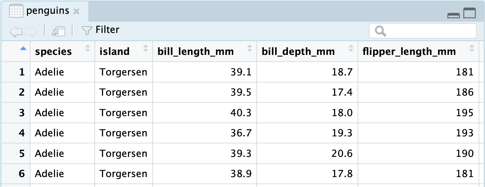

?meanSummarizing Categorical Data
From data frames to tables. From tables to bar charts.
In this tutorial we’ll grow your R toolbox to visualize categorical data but first, a very general skill: how to ask for help.
Help and Arguments
Every function in R has a built-in help file that tells you about how it works. It can be accessed using ?.
This will pop up the help file in a tab next to your Files tab in the lower right hand corner of RStudio. In addition to describing what the function does, the help file lists out the function’s arguments. Arguments are the separate pieces of input that you can supply to a function and they can be named or unnamed.
In Taxonomy of Data, we created a vector called my_fav_numbers and then calculated its mean using the mean() function.
my_fav_numbers <- c(9, 11, 19, 28)
mean(my_fav_numbers)[1] 16.75In the second command that we entered above, we used a single unnamed argument, my_fav_numbers. We could have alternatively written this with a named argument:
mean(x = my_fav_numbers)[1] 16.75As the help file suggests, x is the R object (here a vector of numbers) that you want to take the mean of. You can always pass objects to a function as named arguments, or if you want to be more concise, you can pass it unnamed and R will rely on the order to figure things out.
mean().
To test how this actually works, let’s add a second unnamed argument to our function. From reading the help file, you learn that you can supply it a trim argument to trim off some percent of the highest and lowest values before computing the mean. The default value of this argument is 0, but we can change this. Let’s trim off 25% from the lower end and 25% from the upper end.
mean(my_fav_numbers, .25)[1] 15It worked! We trim off the 9 and the 28, then take \((11 + 19) / 2 = 15\). We can also write the command using named arguments. The code will be a bit more verbose but the answer will be the same.
mean(x = my_fav_numbers, trim = .25)[1] 15What happens if we use unnamed arguments but change the order? Let’s find out.
mean(.25, my_fav_numbers)Error in mean.default(0.25, my_fav_numbers): 'trim' must be numeric of length oneSince there are no names, R looks at the second argument and expects it to be the a proportion between 0 and .5 that it will use to trim. You have passed it a vector of three integers instead, so it’s justified in complaining.
Libraries

tidyverse library, which contains many useful packages for data scienceIn Taxonomy of Data, we learned about a few different functions that can be used on vectors, such as mean(). We also learned about a function called data.frame(), which allowed us to bring vectors together as part of a new structure called a data frame, with each of the vectors used as columns.
While the base functionality provided by R is powerful, developers often seek to find more efficient ways to complete tasks. In doing so, they push the power of R forward. R has a vast ecosystem of libraries that add new functions. Any installed library can be loaded with the library() function. Here, we will load the tidyverse library, one of the core external libraries that we will be using this semester.
library(tidyverse)To use these functions within this library (or any other library), you will need to run the above line of code each time you start an RStudio session!
The tidyverse library has many different packages which contain smaller pieces of functionality. Today, our focus is to summarize categorical data, and one avenue we have explored already is a visual summary; a bar chart. Let’s explore how the plots shown earlier in this set of notes were made. We will use ggplot2, tidyverse’s resident visualization package.
First, we should load the penguins data into our environment. The penguins data is actually located in a special library made just for this course called stat20data. This library hosts the datasets which will be the subjects of your labs. Therefore, we need to load this library first.
library(stat20data)Then, we can load in the penguins data by using the aptly named data function.
data(penguins)Once you do this, you will see the penguins dataset, in all of its glory, appear in the environment pane at the top right of your RStudio session (you may need to click in the area once or twice).

You can click the blue dropdown arrow to see each variable in the dataset, or for a more traditional view, you can click the white spreadsheet icon to the right:

Now, we’re ready to write some ggplot2 code and make our first visualization of the year! We will create the exact stacked, normalized bar chart you saw earlier in the notes.
A first visualization with ggplot2
The main function within the ggplot2 package is, well, ggplot().
ggplot(data = penguins)
The ggplot() function takes as its first argument a data frame (the data argument). By itself, there’s not much to look at; it just creates a blank canvas.
Let’s now indicate how we want to map our variables to each area of the plot. For now, let’s just focus on the species of penguin; we’ll handle the island later.
We had species of penguin on the horizontal (x) axis. This piece of information (which is known as an aesthetic attribute of the plot), goes into a second argument called mapping and within a function called aes().
ggplot(data = penguins,
mapping = aes(x = species))
Now we’re getting somewhere. We can see the x axis has been set up with labels for the species of penguins.
All that is left is to actually put the observations on the plot. We do this by declaring what geometry we want and adding this information to our existing code. We can add this information via a new layer, which can be added on by using the + syntax and taking a newline.
ggplot(data = penguins,
mapping = aes(x = species)) +
geom_bar()The layer we added was a geometry layer corresponding to the bar chart, called geom_bar().
Note that the bars are not colored like before, but are just gray. This is because we are missing the island variable! Island was represented by coloring in (filling) the bars for us according to the conditional proportions of penguins within a specific species belonging to a specific island. We can include this by adding to our aes() function in the original layer.
ggplot(data = penguins,
mapping = aes(x = species,
fill = island)) +
geom_bar()
Almost there! Note that what we have right now is just a stacked bar chart. There’s one more fix that we need to apply. Note that geom_bar() can be thought of as a function as well. One of its arguments, position, will help us solve this issue1. position defaults to a stacked bar chart, but we can fix this by supplying it with "fill"!
ggplot(data = penguins,
mapping = aes(x = species,
fill = island)) +
geom_bar(position = "fill")
A side-by-side (dodged) bar chart can be produced by replacing "fill" with "dodge". To recover the original, stacked bar chart, use "stack"!
There we have it!
Footnotes
This argument is generally not important for the other plots we create in this course, which is why in the initial piece of code featuring
geom_bar(), it was not specified at all.↩︎